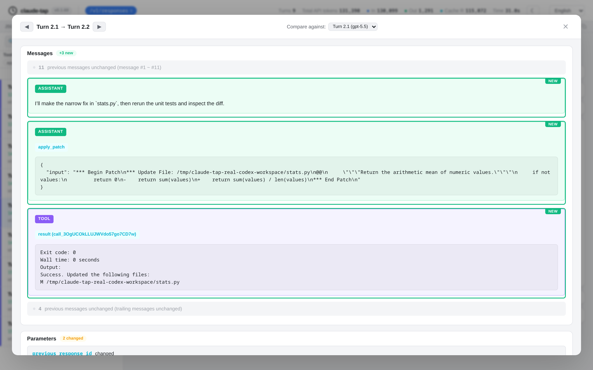
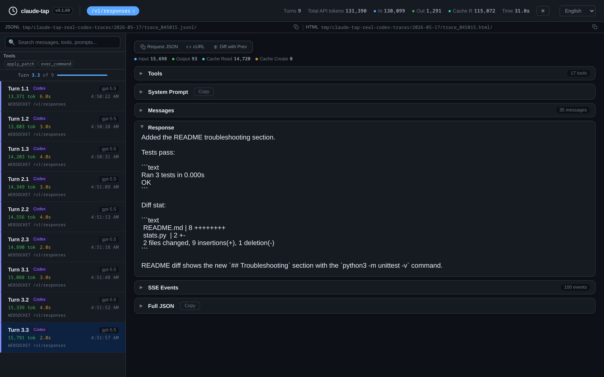

Inspect full request flow
Review system prompts, conversation history, tool schemas, raw request bodies, and reconstructed responses.
Local AI agent trace viewer
claude-tap captures real API traffic from AI coding agents and turns it into a local trace viewer. Inspect prompts, tool calls, token usage, latency, streaming responses, and request diffs without uploading private traces to a hosted dashboard.
uv tool install claude-tap
claude-tap --tap-client codex
claude-tap export --format html trace.jsonl
Agent runs are shaped by prompts, tool schemas, retries, streaming chunks, and model-specific request formats. claude-tap keeps those pieces visible so debugging can start from the actual trace.
Review system prompts, conversation history, tool schemas, raw request bodies, and reconstructed responses.
Use structured diffs to see which message, prompt, tool, or parameter changed between adjacent turns.
Export a self-contained HTML viewer that teammates can open locally for review, support, or incident notes.
Use one local trace viewer for Claude Code traces, Codex traces, OpenAI Responses API traces, Gemini traces, and other coding-agent sessions.


Keep the trace local while you inspect it, then export a static HTML artifact only when you need to share.
Use claude-tap when you need to understand what an AI coding agent actually did before you tune prompts, compare tools, or share a run with another reviewer.